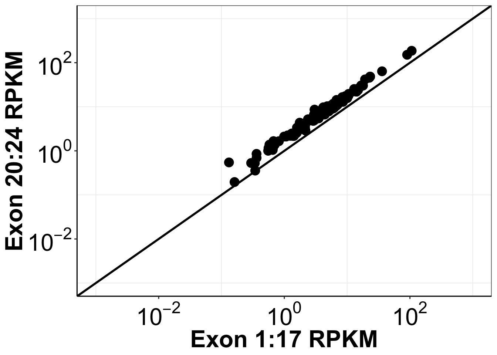

Last updated: 2019-02-20
workflowr checks: (Click a bullet for more information) ✔ R Markdown file: up-to-date
Great! Since the R Markdown file has been committed to the Git repository, you know the exact version of the code that produced these results.
✔ Environment: empty
Great job! The global environment was empty. Objects defined in the global environment can affect the analysis in your R Markdown file in unknown ways. For reproduciblity it’s best to always run the code in an empty environment.
✔ Seed:
set.seed(20190211)
The command set.seed(20190211) was run prior to running the code in the R Markdown file. Setting a seed ensures that any results that rely on randomness, e.g. subsampling or permutations, are reproducible.
✔ Session information: recorded
Great job! Recording the operating system, R version, and package versions is critical for reproducibility.
✔ Repository version: 6fec622
wflow_publish or wflow_git_commit). workflowr only checks the R Markdown file, but you know if there are other scripts or data files that it depends on. Below is the status of the Git repository when the results were generated:
Ignored files:
Ignored: .Rhistory
Ignored: .Rproj.user/
Untracked files:
Untracked: code/alldata_compiler.R
Untracked: code/contab_maker.R
Untracked: code/mut_excl_genes_datapoints.R
Untracked: code/mut_excl_genes_generator.R
Untracked: code/quadratic_solver.R
Untracked: code/simresults_generator.R
Untracked: data/All_Data_V2.csv
Untracked: data/all_data.csv
Untracked: data/tcga_luad_expression/
Untracked: data/tcga_skcm_expression/
Untracked: docs/figure/Filteranalysis.Rmd/
Untracked: output/alkati_filtercutoff_allfilters.csv
Untracked: output/alkati_luad_exonimbalance.pdf
Untracked: output/alkati_mtn_pval_fig2B.pdf
Untracked: output/alkati_skcm_exonimbalance.pdf
Untracked: output/all_data_luad.csv
Untracked: output/all_data_luad_egfr.csv
Untracked: output/all_data_skcm.csv
Untracked: output/egfr_luad_exonimbalance.pdf
Untracked: output/fig2b2_filtercutoff_atinras_totalalk.pdf
Untracked: output/fig2b_filtercutoff_atibraf.pdf
Untracked: output/fig2b_filtercutoff_atinras.pdf
Untracked: output/luad_alk_exon_expression.csv
Untracked: output/luad_egfr_exon_expression.csv
Untracked: output/skcm_alk_exon_expression.csv
| File | Version | Author | Date | Message |
|---|---|---|---|---|
| Rmd | 6fec622 | haiderinam | 2019-02-20 | Added EGFR Expression Analysis |
This code is to look at the EGFR exon imbalance. Therefore, we need the count data, rsem data, and exon data
LUAD Genes RSEM
rsemdatanormalized=read.table("data/tcga_luad_expression/luadrsemdata/gdac.broadinstitute.org_LUAD.Merge_rnaseqv2__illuminahiseq_rnaseqv2__unc_edu__Level_3__RSEM_genes_normalized__data.Level_3.2016012800.0.0/LUAD.rnaseqv2__illuminahiseq_rnaseqv2__unc_edu__Level_3__RSEM_genes_normalized__data.data.txt",sep = "\t",header = T,stringsAsFactors = F)
egfr_rsem=data.frame(t(rsemdatanormalized[grepl("^egfr\\|",rsemdatanormalized$Hybridization.REF,ignore.case = T),])[-1,])
#410 of the 577 patients have an RSEM higher than 410
colnames(egfr_rsem)[1]="RSEM_normalized"
egfr_rsem$Patid=rownames(egfr_rsem)
#Standardizing Patid Names
egfr_rsem$Patid=substring(egfr_rsem$Patid,first = 1,last = 12)
egfr_rsem$Patid=gsub("\\.","-",egfr_rsem$Patid)
# # As Character
egfr_rsem[colnames(egfr_rsem)] <- lapply(egfr_rsem[colnames(egfr_rsem)],as.character)
# # As Numeric: Converting from list to numeric
egfr_rsem$RSEM_normalized=unlist(egfr_rsem$RSEM_normalized)
egfr_rsem$RSEM_normalized=as.numeric(egfr_rsem$RSEM_normalized)LUAD Count data:
#Non-normalized:
gene_expression_data=read.table("data/tcga_luad_expression/luadgeneexpression/gdac.broadinstitute.org_LUAD.Merge_rnaseq__illuminahiseq_rnaseq__unc_edu__Level_3__gene_expression__data.Level_3.2016012800.0.0/LUAD.rnaseq__illuminahiseq_rnaseq__unc_edu__Level_3__gene_expression__data.data.txt",sep = "\t",header = T,stringsAsFactors = F)
#Normalized
# gene_expression_data=read.table(,sep = "\t",header = T,stringsAsFactors = F)
#Finding egfr
egfr_gene_exp=rbind(gene_expression_data[1,],gene_expression_data[grepl("^egfr\\|",gene_expression_data$Hybridization.REF,ignore.case = T),])
#Removing Columns for Median_length_normalized and RPKM
t_egfr_gene_exp=data.frame(t(egfr_gene_exp[,grepl("raw_count",egfr_gene_exp[1,])]))
#Counting patients with raw reads >500
# sum(as.numeric(as.numeric(as.character(t_egfr_gene_exp$X580))>=500))
#ONLY 6 PATIENTS HAVE RAW COUNTS OF >500LUAD Exon RPKM This creates a .csv file and only needs to be run once.
# rm(list=ls())#Clears workspace
exondatacomb=read.table("data/tcga_luad_expression/luadexondatacomb/gdac.broadinstitute.org_LUAD.Merge_rnaseq__illuminahiseq_rnaseq__unc_edu__Level_3__exon_expression__data.Level_3.2016012800.0.0/LUAD.rnaseq__illuminahiseq_rnaseq__unc_edu__Level_3__exon_expression__data.data.txt",stringsAsFactors=FALSE,header=TRUE, sep="\t",fill=TRUE)
# head(exondatacomb)
# Obtained EGFR data from here: https://useast.ensembl.org/Homo_sapiens/Gene/Summary?db=core;g=ENSG00000146648;r=7:55019021-55211628
#Chromosome 7
exondatachr7=exondatacomb[grep("^chr7:",exondatacomb$Hybridization.REF),] #i.e. it starts with chromosome 7
#EGFR within Chromosome 7
exondatachr7egfr=exondatacomb[c(90511:90542),]
exondatachr7egfr=exondatachr7egfr[grep(":\\+",exondatachr2egfr$Hybridization.REF),] #i.e. it is only on +ive strand
exondatachr7egfr=exondatachr7egfr[c(-4,-16,-17),]
exondatachr7egfr$exon=c(27:1)
alldataegfr=exondatachr7egfr[,c(488,c(2:487))]
#Switching up order
alldataegfr2=alldataegfr[c(27:1),]
#Making the dataframe of a numeric type so that analysis can be carried out on it.
# As Character
alldataegfr[colnames(alldataegfr)] <- lapply(alldataegfr[colnames(alldataegfr)],as.character)
# As Numeric
alldataegfr[colnames(alldataegfr)] <- lapply(alldataegfr[colnames(alldataegfr)],as.numeric)
#Getting the correct column names for alldataegfr
colnames_exondata=exondatacomb[1,]
colnames(colnames_exondata)=colnames(alldataegfr)
alldataegfr=rbind(colnames_exondata,alldataegfr) #Adding first row that contains names of measurements such as RPKM, RSEM, Counts
write.table(alldataegfr,'output/luad_egfr_exon_expression.csv')alldataegfr=read.csv("output/luad_egfr_exon_expression.csv",stringsAsFactors = F,header = T,sep = "",fill = T)
#Getting Count Data
alldataegfr_count=cbind(alldataegfr$exon,alldataegfr[,grepl("raw_counts",alldataegfr[1,])])[-1,]
# As Character
alldataegfr_count[colnames(alldataegfr_count)] <-lapply(alldataegfr_count[colnames(alldataegfr_count)],as.character)
# As Numeric
alldataegfr_count[colnames(alldataegfr_count)] <- lapply(alldataegfr_count[colnames(alldataegfr_count)],as.numeric)
#Sum exons 1:27
egfr_count_data=data.frame(t(data.frame(lapply(alldataegfr_count[c(1:27),],sum))[,-1])) #Not sure if lapply is the right thing to use here. Really messed up way of summing indices in dataframe
colnames(egfr_count_data)="mRNA_count"
alldataegfr_medianlength=cbind(alldataegfr$exon,alldataegfr[,grepl("median_length",alldataegfr[1,])])
# As Character
alldataegfr_medianlength=alldataegfr_medianlength[-1,] #Removing the first row. May be unnecessary in the future
alldataegfr_medianlength[colnames(alldataegfr_medianlength)] <- lapply(alldataegfr_medianlength[colnames(alldataegfr_medianlength)],as.character)
# As Numeric
alldataegfr_medianlength[colnames(alldataegfr_medianlength)] <- lapply(alldataegfr_medianlength[colnames(alldataegfr_medianlength)],as.numeric)
#Sum exons 1:27
egfr_medianlength_data=data.frame(t(data.frame(lapply(alldataegfr_medianlength[c(1:27),],sum))[,-1])) #Removing sum of exons lol
colnames(egfr_medianlength_data)="medianlength"
#Getting RPKM
alldataegfr_RPKM=cbind(alldataegfr$exon,alldataegfr[,grepl("RPKM",alldataegfr[1,])])
# As Character
alldataegfr_RPKM=alldataegfr_RPKM[-1,] #Removing the first row. May be unnecessary in the future
alldataegfr_RPKM[colnames(alldataegfr_RPKM)] <- lapply(alldataegfr_RPKM[colnames(alldataegfr_RPKM)],as.character)
# As Numeric
alldataegfr_RPKM[colnames(alldataegfr_RPKM)] <- lapply(alldataegfr_RPKM[colnames(alldataegfr_RPKM)],as.numeric)
egfr_RPKM_data=data.frame(cbind(lapply(alldataegfr_RPKM[c(1:17),],mean),lapply(alldataegfr_RPKM[c(18:24),],mean))[-1,])
colnames(egfr_RPKM_data)=c("mean_RPKM_1.17","mean_RPKM_18.24")
# As Character
egfr_RPKM_data[colnames(egfr_RPKM_data)] <- lapply(egfr_RPKM_data[colnames(egfr_RPKM_data)],as.character)
# As Numeric
egfr_RPKM_data[colnames(egfr_RPKM_data)] <- lapply(egfr_RPKM_data[colnames(egfr_RPKM_data)],as.numeric)
# Calculating Ratios of exon RPKM means
egfr_RPKM_data$Ratio18.24=egfr_RPKM_data$mean_RPKM_18.24/egfr_RPKM_data$mean_RPKM_1.17
#Changing rownames (patient_ids) to become the same between each other
rownames(egfr_RPKM_data)=substring(rownames(egfr_RPKM_data),first=1,last=28)
rownames(egfr_medianlength_data)=substring(rownames(egfr_medianlength_data),first=1,last=28)
egfr_RPKM_data$Patid=rownames(egfr_RPKM_data)
egfr_medianlength_data$Patid=rownames(egfr_medianlength_data)
egfr_count_data$Patid=rownames(egfr_count_data)
mergetemp=merge(egfr_RPKM_data,egfr_count_data,by="Patid")
egfr_exon_data=merge(mergetemp,egfr_medianlength_data,by="Patid")
#Transforming the Patids so that they're compatible with the Patids in the mutation data
egfr_exon_data$Patid=substring(egfr_exon_data$Patid,first = 1,last = 12)
#Since the names for exon data are not the same format as the mutation data, we're gonna change that here
egfr_exon_data$Patid=gsub("\\.","-",egfr_exon_data$Patid)
egfr_merged_data=merge(egfr_exon_data,egfr_rsem,by="Patid",all=T)
write.csv(egfr_merged_data,"output/all_data_luad_egfr.csv")Making EGFR Expression the plots:
egfr_merged_data=read.csv("output/all_data_luad_egfr.csv")
ggplot(egfr_merged_data,aes(x=mean_RPKM_1.17, y=mean_RPKM_18.24))+
geom_abline(size=1)+
geom_point(size=4)+
scale_x_continuous(trans = "log10",name="Exon 1:17 RPKM",breaks=c(1e-2,1e0,1e2),labels = parse(text = c("10^-2","10^0","10^2")),limits = c(1e-3,1e3))+
scale_y_continuous(trans = "log10",name="Exon 20:24 RPKM",breaks=c(1e-2,1e0,1e2),labels = parse(text = c("10^-2","10^0","10^2")),limits = c(1e-3,1e3))+
cleanup+
theme(plot.title = element_text(hjust=.5),
text = element_text(size=24,face = "bold"),
axis.title = element_text(face="bold",size="24"),
axis.text=element_text(face="bold",size="24",colour = "black"))+
theme(legend.key.size = unit(30,"pt"))Warning: Removed 389 rows containing missing values (geom_point).
ggsave("output/egfr_luad_exonimbalance.pdf",width =12 ,height =10 ,units = "in",useDingbats=F)Warning: Removed 389 rows containing missing values (geom_point).###We observed an insignificant difference between the distribution for the 1-17 exons and the 20-24 exons.sessionInfo()R version 3.5.2 (2018-12-20)
Platform: x86_64-apple-darwin15.6.0 (64-bit)
Running under: macOS Mojave 10.14.3
Matrix products: default
BLAS: /Library/Frameworks/R.framework/Versions/3.5/Resources/lib/libRblas.0.dylib
LAPACK: /Library/Frameworks/R.framework/Versions/3.5/Resources/lib/libRlapack.dylib
locale:
[1] en_US.UTF-8/en_US.UTF-8/en_US.UTF-8/C/en_US.UTF-8/en_US.UTF-8
attached base packages:
[1] parallel grid stats graphics grDevices utils datasets
[8] methods base
other attached packages:
[1] ggsignif_0.4.0 usethis_1.4.0 devtools_2.0.1
[4] RColorBrewer_1.1-2 reshape2_1.4.3 ggplot2_3.1.0
[7] doParallel_1.0.14 iterators_1.0.10 foreach_1.4.4
[10] dplyr_0.7.8 VennDiagram_1.6.20 futile.logger_1.4.3
[13] workflowr_1.1.1 tictoc_1.0 knitr_1.21
loaded via a namespace (and not attached):
[1] tidyselect_0.2.5 xfun_0.4 remotes_2.0.2
[4] purrr_0.3.0 colorspace_1.4-0 htmltools_0.3.6
[7] yaml_2.2.0 rlang_0.3.1 pkgbuild_1.0.2
[10] R.oo_1.22.0 pillar_1.3.1 glue_1.3.0
[13] withr_2.1.2 R.utils_2.7.0 sessioninfo_1.1.1
[16] lambda.r_1.2.3 bindrcpp_0.2.2 bindr_0.1.1
[19] plyr_1.8.4 stringr_1.3.1 munsell_0.5.0
[22] gtable_0.2.0 R.methodsS3_1.7.1 codetools_0.2-16
[25] evaluate_0.12 memoise_1.1.0 callr_3.1.1
[28] ps_1.3.0 Rcpp_1.0.0 backports_1.1.3
[31] scales_1.0.0 formatR_1.5 desc_1.2.0
[34] pkgload_1.0.2 fs_1.2.6 digest_0.6.18
[37] stringi_1.2.4 processx_3.2.1 rprojroot_1.3-2
[40] cli_1.0.1 tools_3.5.2 magrittr_1.5
[43] lazyeval_0.2.1 tibble_2.0.1 futile.options_1.0.1
[46] crayon_1.3.4 whisker_0.3-2 pkgconfig_2.0.2
[49] prettyunits_1.0.2 assertthat_0.2.0 rmarkdown_1.11
[52] R6_2.3.0 git2r_0.24.0 compiler_3.5.2 This reproducible R Markdown analysis was created with workflowr 1.1.1